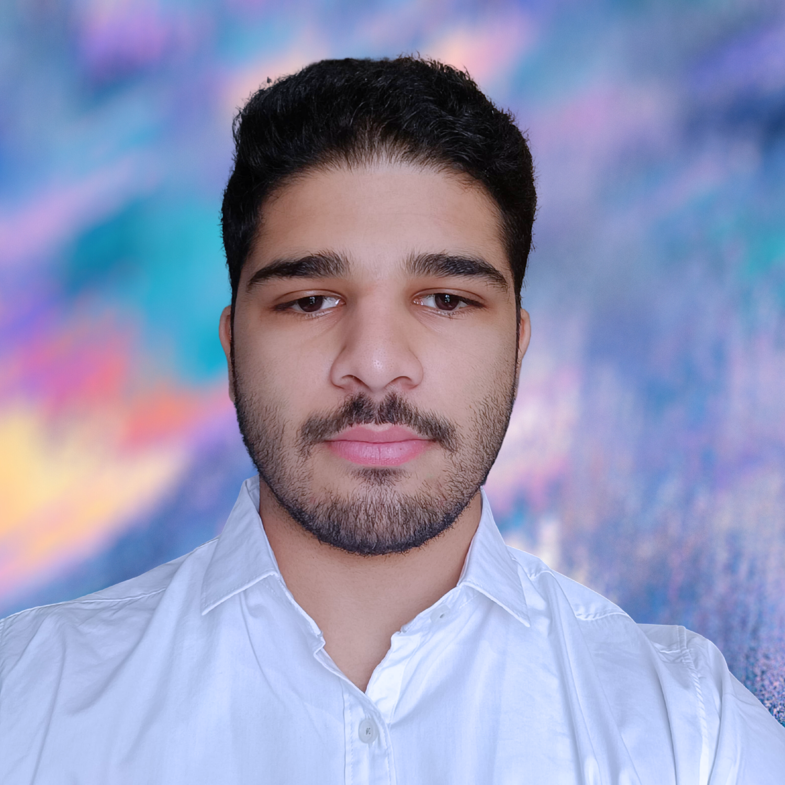

<!DOCTYPE html>
<!DOCTYPE html>
<html lang="en">

<head>
    <meta charset="UTF-8">
    <meta name="viewport" content="width=device-width, initial-scale=1.0">
    <title>SRM CAST | About</title>
    <link href="https://unpkg.com/boxicons@2.1.2/css/boxicons.min.css" rel="stylesheet">
    <link rel="stylesheet" href="assets/css/styles.css">
    <link rel="icon" type="image/png" href="./assets/img/favicon.png">
    <style>
        * {
            background-color: hsl(38, 69%, 59%);
        }

        .main {
            overflow: hidden;
            padding-top: 5.0rem;
        }

        .boxboxbox {
            padding: 5px;
            text-align: center;
            width: 95%;
            max-width: 850px;
            margin: 10px auto;
            padding: 20px;
            background-color: rgba(255, 255, 255, 0.1);
            border: 1px solid transparent;
            border-radius: 10px;
        }

        .boxboxbox>*,
        .boxboxbox>*>*,
        .boxboxbox>*>*>* {
            background-color: rgba(255, 255, 255, 0);
        }

        .about__host-img {
            margin-top: 3rem;
            width: 100%;
            max-width: 267px;
            height: auto;
            border-radius: 50%;
            display: block;
            margin-left: auto;
            margin-right: auto;
            transition: transform 0.3s ease-in-out, filter 0.3s ease-in-out;
        }

        .about__host-img:hover {
            transform: scale(1.1);
            filter: brightness(0.8);
        }

        .about__hosts {
            display: flex;
            flex-wrap: wrap;
            justify-content: space-between;
        }

        .about__host {
            flex: 1 0 48%;
            margin-bottom: 1.5rem;
            text-align: center;
        }

        .about__host-info,
        .about__host-link {
            text-align: center;
        }

        .host_description {
            margin-top: 1rem;
            text-align: justify;
        }

        @media screen and (max-width: 767px) {
            .about__host {
                flex: 1 0 100%;
            }
        }
    </style>
</head>

<body>
    <!-- Add your content here -->
</body>

</html>
</style>
</head>

<body>
    <!-- Header -->
    <header class="header">
        <nav class="nav container">
            <a href="#" class="nav__logo">SRM CAST</a>
            <div class="nav__menu" id="nav-menu">
                <ul class="nav__list">
                    <li class="nav__item">
                        <a href="./index.html" class="nav__link">Home</a>
                    </li>
                    <li class="nav__item">
                        <a href="./explore.html" class="nav__link">Explore</a>
                    </li>
                    <li class="nav__item">
                        <a href="./about.html" class="nav__link">About</a>
                    </li>
                    <li class="nav__item">
                        <a href="./contact.html" class="nav__link">Contact</a>
                    </li>
                </ul>
                <div class="nav__close" id="nav-close">
                    <i class='bx bx-x'></i>
                </div>
            </div>
            <div class="nav__toggle" id="nav-toggle">
                <i class='bx bx-grid-alt'></i>
            </div>
        </nav>
    </header>
    <!-- Header -->

    <!-- main -->
    <main class="main">
        <!-- About -->
        <section class="about">
            <div class="about__container container">
                <div class="about__vision">
                    <h2 class="about__title">About</h2>
                    <p class="about__description">
                        SRM CAST is an innovative platform that empowers students with knowledge, inspiration, and
                        opportunities beyond traditional boundaries.
                        <br>Led by charismatic hosts Archit Jain and Aviral Vashistha, both hailing from a strong tech
                        background and a passion for doing more, SRM CAST curates engaging conversations that explore
                        the latest innovations and trends. Archit and Aviral infuse energy and charm into every episode,
                        fostering a captivating exploration of diverse topics.
                        <br>With a commitment to creating a dynamic learning space, SRM CAST's podcasts and interviews
                        serve as a unique blend of information and entertainment, making it a go-to platform for
                        insightful discussions and inspiring narratives.
                    </p>
                    <br>
                    <h2 class="about__title">Vision</h2>
                    <p class="about__description">
                        At SRM CAST, our vision is to be a trailblazer in redefining the learning experience for SRM
                        students.
                        <br>We envision a dynamic platform that goes beyond the podium, empowering students with
                        knowledge, inspiration, and opportunities. Our vision is to create a space where every student
                        can access valuable insights, connect with industry leaders, and embark on a journey of
                        continuous learning.
                        <br>SRM CAST strives to be a catalyst for personal and academic growth, making a lasting impact
                        on the educational landscape.
                    </p>
                </div>

                <br>
                <h2 class="about__title">Hosts</h2>
                <div class="about__hosts">
                    <!-- Host 1 -->
                    <div class="boxboxbox">
                        <div class="about__host">
                            <a href="https://www.linkedin.com/in/thisisarchitjain/" target="_blank">
                                
                            </a>

                            <div class="about__host-info">
                                <br>
                                <h3 class="about__host-name">Archit Jain</h3>
                                <a href="https://www.linkedin.com/in/thisisarchitjain/" target="_blank"
                                    class="about__host-link">
                                    
                                </a>
                                <p class="host_description">A tech aficionado and charismatic host at SRM CAST. With a
                                    background in technology and a keen interest in emerging trends, Archit fosters
                                    engaging conversations that delve into the latest innovations. He infuses energy and
                                    charm into every episode, and his dynamic hosting style, coupled with insightful
                                    questions, makes each segment a captivating exploration of diverse topics.</p>
                            </div>
                        </div>
                    </div>

                    <!-- Host 2 -->
                    <div class="boxboxbox">
                        <div class="about__host">
                            <a href="https://www.linkedin.com/in/aviral-vashistha/" target="_blank">
                                
                                <div class="about__host-info">
                            </a>


                            <br>
                            <h3 class="about__host-name">Aviral Vashistha</h3>
                            <a href="https://www.linkedin.com/in/aviral-vashistha/" target="_blank"
                                class="about__host-link">
                                
                            </a>
                            <p class="host_description">A tech-savvy and charismatic voice behind SRM CAST. With a solid
                                background in technology, Aviral brings a unique blend of expertise and enthusiasm to
                                our podcasts. His shows are a delightful combination of information and entertainment.
                                Aviral's ability to connect with guests and listeners alike creates an immersive
                                experience, making SRM CAST a go-to platform for insightful discussions and inspiring
                                narratives.</p>
                        </div>
                    </div>
                </div>

            </div>
            </div>
        </section>
    </main>
    <!-- main -->

    <br><br><br>

    <!-- JS -->
    <script src="assets/js/scrollreveal.min.js"></script>
    <script src="assets/js/main.js"></script>
</body>

</html>